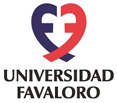
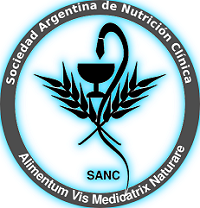

Experiencia Clinica
Consultorio Nutricional
-
Fundación CenCor
2017-2019
-
Clínica Tahué – Clínica del Oeste
2015-16
Nutricion Clinica - Internado
-
Sanatorio Virgen de Lourdes
2017
Formacion Profesional
Estudios de Grado
-
Licenciatura en Nutrición
Universidad Catolica de Cuyo
2010 - 2015
Estudios de Posgrado
-
Curso de Posgrado Universitario sobre Obesidad
Universidad Favaloro
2015 (300hs)
-
Curso de Actualizacion sobre Embarazo y Nutricion
Universidad Austral
2018 (60hs)
-
Curso de Nutricion, Gastronomia y Salud
Sociedad Argentina de Nutrición Clínica
2018 (150hs)
-
Curso Avanzado en Soporte Nutricional
Colegio Mexicano de Nutriólogos
2019 (184hs)
-
Curso Universitario de Actualizacion en Medicina Ayurveda
Fundación de Salud Ayurveda Prema - Universidad del Gran Rosario
2021 - En curso

